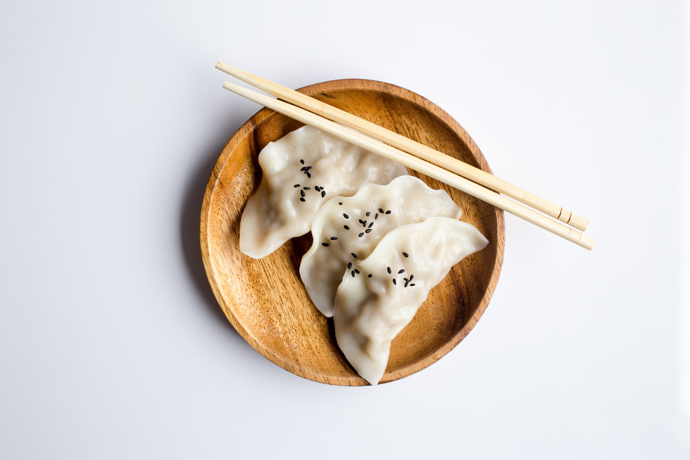

Finding simplicity in life

July 23, 2019 | 3 comments
Life can get complicated really quickly, but it doesn't have to be!
There are many ways to simplify your life, a few of which we've
explored in the past. This week we're taking a bit of a approach
though, in how you can find simplicity in the life you already
living.
continue reading
Keeping cooking simple
Food is a very important part of everyone's life. If you want to
be healthy, you have to eat healthy. One of the easiest ways to do
that is to keep your cooking nice and simple.

July 19, 2019 | 3 comments
Simplicity and work
Work is often a major source of stress. People get frustrated, it
ruins their relationship with others and it leads to burnout. By
keeping your work life as simple as possible, it will help balance
everything out.
continue reading

July 12, 2019 | 3 comments
Simple decorations
A home isn't a home until you've decorated a little. People either
don't decorate, or they go overboard and it doesn't have the
impact they were hoping for. Staying simple will help draw the eye
where you want it to and make things pop like never before.
continue reading
July 3, 2019 | 3 comments